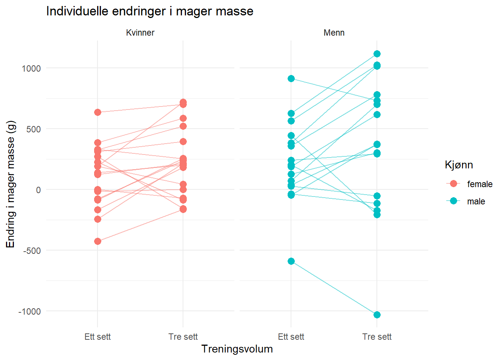
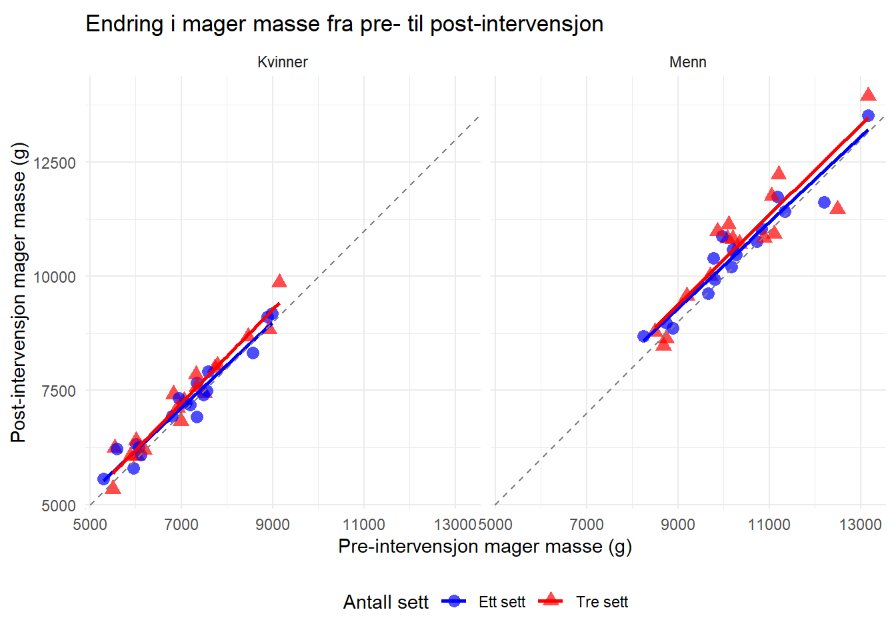
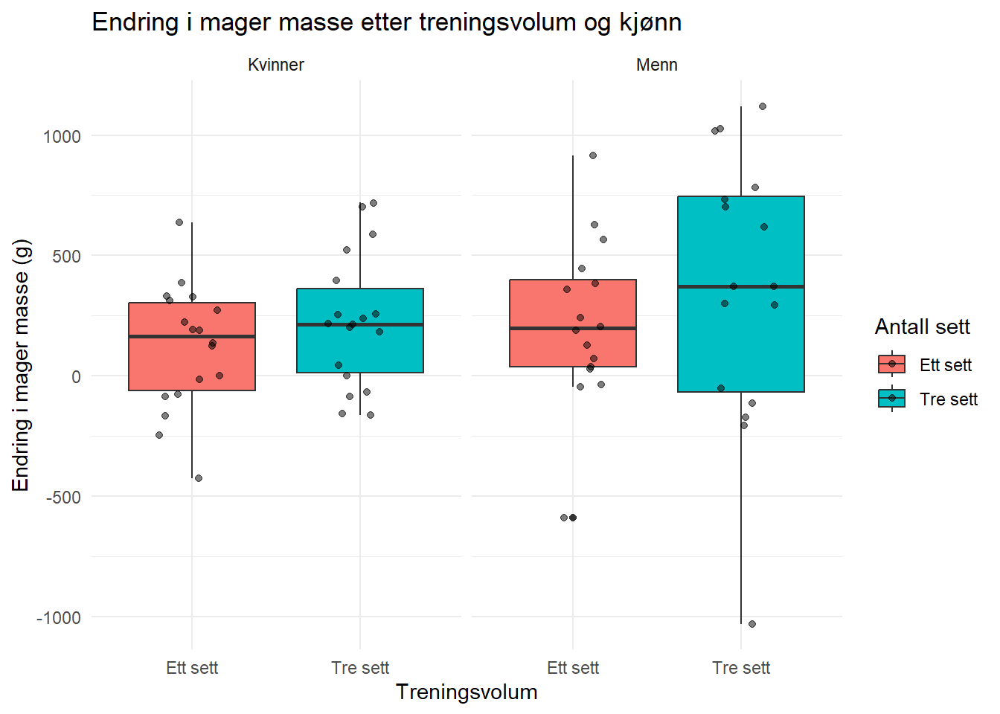

Dette er oppgave 5: “Analyzing repeated measures experiments” i faget IDR4000-1 24H Kvantitativ metode og statistikk for master i treningsfysiologi. I denne oppgaven har jeg analysert og rapportert om en studie som undersøker hvordan treningsvolum ved styrketrening påvirker mager kroppsmasse og muskelstyrke. Jeg har brukt data fra exscidata-pakken, nærmere bestemt datasettene “strengthvolume” og “dxadata” som ligger i RStudio. Linken til GitHub med alle dokumentene inkludert i rapporten ligger på github.com/Steien/oppgave_5.git
1.1 Bakgrunn og betydning av styrketrening
Styrketrening drives både for å få bedre fysisk prestasjonsevne, forebygge skade, rehabilitering etter skade, bedre velvære, utseende og for å oppnå god helse (Raastad et al., 2010). Styrketrening utføres i dag av mange ulike grupper, som idrettsutøvere, mosjonister og pasienter under opptrening. Frem til begynnelsen av 2000-tallet var det stor skepsis mot tung styrketrening i et helseperspektiv. Det var bare noen idrettsgrupper som vektløftere, styrkeløftere, brytere, kasteutøvere i friidrett og kroppsbyggere som drev med tung styrketrening. Oppfatningen blant andre idrettsutøvere var at slik trening førte til treghet i muskulaturen og redusert bevegelighet. Denne holdningen har heldigvis endret seg radikalt etterhvert som vi har fått bedre kunnskap om effekten av styrketrening (Raastad et al., 2010).
På lik linje med kardiovaskulær form er muskelstyrke et fysiologisk trekk som både blir påvirket av fysisk aktivitet, særlig motstandstrening, og genetiske faktorer. Det er imidlertid, sammenlignet med studier på kardiovaskulær form, få studier som har sett på muskelstyrke og dødelighet (Stensel et al., 2021). Stensel et al. (2021) skriver også at i prospektive kohortstudier som har sett på både måling av fysisk aktivitet og målinger av styrke eller kardiovaskulær form, har de to sistnevnte betraktelig større positiv effekt på dødelighet. Stensel et al. (2021) sier at dette kan skyldes svakheter i selvrapporteringsmålinger av fysisk aktivitet, men det kan også peke på de indre genetiske variablene for kardiovaskulær form eller muskelstyrke som kan påvirke dødelighetsrisiko uavhengig av fysisk aktivitet.
Studien til Hammarström et al. (2020) som vi ser på i denne oppgaven, tar for seg effekten av ulikt treningsvolum på muskelstyrke og muskelvekst i bein hos moderat trente individer. Siden deltakerne er sin egen kontroll ved at de trener hver fot med ulikt volum, kan vi få et bilde av hvordan muskelstyrke og muskelvekst blir påvirket av volum uavhengig av eventuelle genetiske variabler som Stensel et al. (2021) nevner.
1.2 Treningsvolum og muskulære tilpasninger
Innenfor styrketrening er det primært hvor ofte og hvor hardt hver enkelt muskelgruppe blir trent, som bestemmer treningseffekten. Kombinasjonen av treningsvolum, treningsintensitet, grad av anstrengelse og treningsfrekvens utgjør den totale treningsbelastningen vi utsettes for. Treningsvolumet i hver økt kan grovt regnes som produktet av antall serier X antall repetisjoner X treningsmotstand for den aktuelle muskelgruppen (Raastad et al., 2010).
Det grunnleggende prinsippet bak et styrke- eller motstandstreningsprogram er overbelastningsprinsippet, som sier at styrkeøkning skjer som et resultat av systematisk og progressiv trening med tilstrekkelig frekvens, intensitet og varighet for å skape tilpasning (Wackerhage, 2014). Å planlegge et treningsprogram for motstandstrening krever derfor nøye valg av volum, belastning, hvile mellom settene og progresjon. I tillegg bør målene med treningen (styrke, kraft, hypertrofi), type utstyr, tilgjengelighet av utstyr og muskelhandling (eksentrisk, konsentrisk, isometrisk, raskt/tregt) vurderes. Det er også viktig at treningsprogrammet tilpasses individet, da ulike programmer er nødvendige for utrente individer, atleter, barn og pasienter som rehabiliteres etter skade (Wackerhage, 2014).
For å få et nøyaktig mål på treningsvolum burde vi ideelt sett måle det indre arbeidet en muskelgruppe utfører for å overvinne ytre motstander. Siden dette i praksis ikke er mulig, kan vi likevel bruke den nevnte metoden for å indikere endringer i treningsvolum over tid, så lenge vi holder oss til de samme øvelsene. Selv om dette ikke gir et fullstendig korrekt bilde av det indre arbeidet en muskelgruppe har utført, gir det en god indikasjon på volumets utvikling (Raastad et al., 2010).
Selv med et optimalt designet treningsprogram vil omfanget av muskelmasse- og styrkeøkning variere dramatisk mellom individer (Wackerhage, 2014). Ifølge Wackerhage (2014) er det, basert på pålitelige vitenskapelige data, mye forvirring rundt hva som utgjør et optimalt treningsprogram, og vi kan egentlig ikke si at et universelt optimalt motstandstreningsprogram finnes. I praksis kan vi si at alt fra 1-5 sett med 6-12 repetisjoner, dersom individet trener til utmattelse i settene, vil føre til betydelige økninger i både muskelstørrelse og styrke. Det er imidlertid viktig å være oppmerksom på at forskjeller i motivasjon, gener, ernæring og individuelle mål vil påvirke responsen på treningen og dermed føre til stor variasjon mellom individene (Wackerhage, 2014).
Forståelsen av sammenhengen mellom muskulære tilpasninger og volum er avgjørende for effektiv trening. Når vi vet hvordan ulike volum påvirker styrke og hypertrofi, kan vi skreddersy treningsprogrammer som maksimerer resultater for ulike individer (Raastad et al., 2010). Dette er spesielt viktig når vi vet at individuelle forskjeller i respons på trening kan være betydelige. Å ha en solid forståelse av hvordan volumet påvirker muskulære tilpasninger gjør det mulig å optimalisere treningen for spesifikke målsettinger og behov.
1.3 Kunnskapshull og forskningsbehov
Som nevnt av både Raastad et al. (2010) og Stensel et al. (2021) er motstandstrening og effekten muskelmasse og styrke har på helsen vår og prestasjon, både i idrett (med unntak av noen få sporter) og i hverdagen til folk, et relativt nytt forskningsområde. Vi har en mye større forståelse av hvordan kardiovaskulær form påvirker helsen vår og hvordan vi bør trene for å forbedre kondisjonen, da det er mye mer forskning på dette området. Vi ser imidlertid at det er flere helsefordeler med motstandstrening, økt styrke og muskelmasse, spesielt ettersom vi blir eldre (ny referanse for å dekke kravet om 5 referanser? Finn en referanse senere, jeg vet jeg har lest det et sted). At vi får mer forskning som ser på hvordan forskjellige former og volum av motstandstrening påvirker vår evne til å bygge mer muskler og/eller styrke, er med på å fylle dette kunnskapshullet.
Da jeg begynte å trene for 19 år siden, var det vanlig “bro science” at høyt volum og moderate vekter var best for å bygge mest muskler, mens lavt volum med høye vekter var best for å bygge mest styrke. Jeg har sett mer forskning de senere årene som tyder på at dette ikke nødvendigvis er helt sant, og at begge treningsmetodene har en større overlapp enn det vi tidligere trodde.
1.4 Forskningspørsmål
Hvordan påvirker ulike treningsvolum (ett sett vs. tre sett) muskelhypertrofi i underekstremitetene hos moderat trente individer over en 12-ukers treningsperiode, og er det forskjeller i responsen mellom kjønn?
2 Metode
Denne studien undersøkte effekten av treningsvolum på muskelhypertrofi og styrke ved å sammenligne ett sett mot tre sett i beinøvelser. Metoden inkluderer beskrivelse av deltakere, studiedesign, treningsprotokoll og datainnsamlingsprosedyrer.
2.1 Deltagere
Studien rekrutterte opprinnelig 41 deltakere i alderen 18 til 40 år. Inklusjonskriteriene omfattet at deltakerne måtte være ikke-røykere og ha begrenset erfaring med styrketrening, definert som ikke mer enn én ukentlig styrketreningsøkt i løpet av de siste 12 månedene før studien. Eksklusjonskriterier inkluderte intoleranse mot lokalbedøvelse, nedsatt muskelstyrke på grunn av tidligere eller nåværende skade, og bruk av reseptbelagte medisiner som kunne påvirke treningsadaptasjoner. I løpet av studien ble syv deltakere (fire kvinner og tre menn) ekskludert fordi de ikke fullførte minst 85% av de planlagte treningsøktene.
Verdier er presentert som gjennomsnitt (standardavvik)
Alle inkluderte deltakere rapporterte tidligere erfaring med sportslige aktiviteter. Tjue deltakere oppga at de var engasjert i fysisk trening ved studiestart (median antall økter per uke: 2, spennvidde: 0,5-4), hvorav 10 utførte sporadisk styrketrening, men ingen mer enn én gang i uken.
2.2 Studiedesign
Denne studien brukte en within-subject design, hvor hver deltaker fungerte som sin egen kontroll. Deltakerne trente ett bein med ett sett (single-set condition) og det andre beinet med tre sett (multiple-set condition) per øvelse. Tildelingen av treningsvolum til hvert bein var randomisert for hver deltaker. Denne designen muliggjør en direkte sammenligning av effekten av treningsvolum på muskelhypertrofi og styrke innenfor samme individ, noe som reduserer påvirkningen av individuelle forskjeller.
2.2.1 treningsprotokål
Intervensjonen bestod av 12 uker med helkropps styrketrening. Treningsprogrammet fokuserte spesielt på beinøvelser, som ble utført unilateralt for å muliggjøre differensiering av treningsvolum innenfor hver deltaker. Beinøvelsene inkluderte unilateral beinpress, leg curl og kneekstensjon. For beinet som var tildelt single-set condition, ble det utført ett sett av hver øvelse, mens for beinet tildelt multiple-set condition ble det utført tre sett. Treningsintensiteten ble gradvis økt gjennom intervensjonen, startende med 10RM de første to ukene, etterfulgt av 8RM i tre uker, og avsluttende med 7RM i syv uker.
2.3 Datainnsamling
For å besvare forskningsspørsmålet ble det samlet inn data om deltakernes kroppssammensetning og muskelstyrke. Datainnsamlingen fokuserte på to hovedområder: målinger av mager kroppsmasse og vurdering av muskelstyrke gjennom ulike styrketester.
2.3.1 målinger av kroppdsmasse
Mager kroppsmasse ble målt ved hjelp av dual-energy X-ray absorptiometry (DXA) før og etter treningsintervensjonen. DXA-skanningen ble utført i henhold til standardprotokoll, og ga detaljert informasjon om kroppssammensetning, inkludert mager masse i begge bein. Deltakerne ble bedt om å faste i 2 timer og avstå fra hard fysisk aktivitet i 48 timer før målingene for å sikre konsistente forhold.
2.3.2 Måling av styrke test
Muskelstyrke ble vurdert gjennom flere tester En repetisjon maksimum (1RM) ble målt i unilateral beinpress og kneekstensjon. Testen startet med en spesifikk oppvarming, etterfulgt av progressive økninger i vekt til deltakeren ikke kunne løfte vekten gjennom full bevegelsesbane.Isokinetisk og isometrisk unilateral kneekstensjonsstyrke ble målt ved hjelp av et dynamometer. Isokinetisk styrke ble testet ved tre vinkelhastigheter (60°, 120° og 240° per sekund), mens isometrisk styrke ble målt ved en knevinkel på 30°.
Disse styrketestene ble utført før intervensjonen startet og etter at den 12-ukers treningsperioden var fullført. For baselinemålingene ble styrketestene utført to ganger, med minst fire dagers mellomrom, og den høyeste verdien ble brukt i analysene.
3 Data analyse
Vis kode
library(tidyverse)library(exscidata)#forberede datasettetdat <- dxadata %>%# Filtrer ut deltakere som ikke er inkludert i analysenfilter(include =="incl") %>%# Velg relevante kolonner for analysenselect(participant, time, sex, multiple, lean.left_leg, lean.right_leg) %>%# Omform data fra bredt til langt format for beinmålingerpivot_longer(cols =c(lean.left_leg, lean.right_leg), names_to ="leg", values_to ="lean_mass") %>%# Lag nye variabler for bein (L/R) og antall settmutate(leg =if_else(leg =="lean.left_leg", "L", "R"),sets =if_else(multiple == leg, "Tre sett", "Ett sett") ) %>%# Omform data fra langt til bredt format for tid (pre/post)pivot_wider(names_from = time, values_from = lean_mass) %>%# Beregn endring i mager masse fra pre til postmutate(change = post - pre)
For å undersøke effekten av treningsvolum på muskelhypertrofi, ble dataene fra Hammarström et al. (2020) analysert. Datasettet inneholdt målinger av mager kroppsmasse for venstre og høyre bein hos hver deltaker, før og etter intervensjonen. Dataene ble behandlet ved å beregne endringen i mager kroppsmasse for hvert bein, og deretter kategorisere disse endringene basert på treningsvolumet (ett sett eller tre sett). Den primære statistiske metoden som ble brukt var en paret t-test for å sammenligne endringene i mager kroppsmasse mellom ett og tre sett. Denne metoden ble valgt på grunn av studiens within-subject design, hvor hvert individ fungerte som sin egen kontroll.
Vis kode
library(tidyverse)library(exscidata)library(lme4)# Her en paret t-test for å sammenligne endringer mellom ett og tre sett.# Last inn datadat <- dxadata %>%select(participant:include, lean.left_leg, lean.right_leg) %>%pivot_longer(names_to ="leg", values_to ="lean.mass", cols = lean.left_leg:lean.right_leg) %>%mutate(leg =if_else(leg =="lean.left_leg", "L", "R"), sets =if_else(multiple == leg, "multiple", "single")) %>%select(participant, time, sex, include, sets, leg, lean.mass) %>%filter(include =="incl") %>%pivot_wider(names_from ="time", values_from ="lean.mass") %>%mutate(change = post - pre) %>%select(participant:sets, change) %>%pivot_wider(names_from = sets, values_from = change) t_resultater <-with(dat, t.test(multiple, single, paired =TRUE))# Skriv ut t-test resultatenepverdi <-round(t_resultater$p.value, 3)tverdi <-round(t_resultater$statistic, 2)df <- t_resultater$parametercil <-round(t_resultater$conf.int[1], 1)ciu <-sprintf("%.1f", round(t_resultater$conf.int[2], 1))estimat <-round(t_resultater$estimate, 1)lean.mass.resultater <-paste0(estimat, " (95% KI: [", cil, ", ", ciu, "], P-verdi = ", pverdi, ", t<sub>", df, "</sub> = ", tverdi, ")")
For å få et mer detaljert bilde av individuelle responser, ble det laget laget et lineplot som viser endringer for hver enkelt deltaker:
Vis kode
# Redefiner datasettet dat <- dxadata %>%filter(include =="incl") %>%select(participant, time, sex, multiple, lean.left_leg, lean.right_leg) %>%pivot_longer(cols =c(lean.left_leg, lean.right_leg), names_to ="leg", values_to ="lean_mass") %>%mutate(leg =if_else(leg =="lean.left_leg", "L", "R"),sets =if_else(multiple == leg, "Tre sett", "Ett sett") ) %>%pivot_wider(names_from = time, values_from = lean_mass) %>%mutate(change = post - pre)# Lag lineplot for individuelle endringerggplot(dat, aes(x = sets, y = change, group = participant, color = sex)) +geom_line(alpha =0.5) +geom_point(size =3) +facet_wrap(~sex, labeller =as_labeller(c("female"="Kvinner", "male"="Menn"))) +labs(title ="Individuelle endringer i mager masse",x ="Treningsvolum",y ="Endring i mager masse (g)",color ="Kjønn" ) +theme_minimal()

Figur 1: Individuelle endringer i mager kroppsmasse fra pre- til post-intervensjon.
Figure 1 illustrerer de individuelle endringene i mager kroppsmasse for hver deltaker. Hver linje representerer en deltaker, og viser endringen fra ett sett til tre sett. Dette plottet avslører den betydelige variasjonen i individuell respons på treningsvolumet, med noen deltakere som viser større økning ved tre sett, mens andre viser liten forskjell eller til og med større økning ved ett sett.
For å undersøke forholdet mellom pre- og post-intervensjonsverdier og hvordan dette påvirkes av treningsvolum, ble det laget et scatterplot:
Vis kode
# Lag scatterplot for pre-post sammenligningggplot(dat, aes(x = pre, y = post, color = sets, shape = sets)) +geom_point(size =3, alpha =0.7) +geom_smooth(method ="lm", se =FALSE) +facet_wrap(~sex, labeller =as_labeller(c("female"="Kvinner", "male"="Menn"))) +scale_color_manual(values =c("Ett sett"="blue", "Tre sett"="red")) +scale_shape_manual(values =c("Ett sett"=16, "Tre sett"=17)) +labs(x ="Pre-intervensjon mager masse (g)",y ="Post-intervensjon mager masse (g)",color ="Antall sett",shape ="Antall sett",title ="Endring i mager masse fra pre- til post-intervensjon" ) +theme_minimal() +theme(legend.position="bottom") +coord_fixed(ratio=1) +geom_abline(intercept=0, slope=1, linetype="dashed", color="gray50")

Figur 2: Forholdet mellom pre- og post-intervensjonsverdier for mager masse.
Figure 2 viser forholdet mellom pre- og post-intervensjonsverdier for mager masse, med separate punkter og regresjonslinjer for ett sett og tre sett. Punkter over den stiplede linjen indikerer en økning i mager masse. Som vi kan se, ligger de fleste punktene over denne linjen, noe som tyder på en generell økning i mager masse for begge treningsvolum. Regresjonslinjen for tre sett ligger generelt høyere enn for ett sett, noe som antyder en større økning i mager masse ved høyere treningsvolum.
Vis kode
#| label: fig-boxplot#| fig-cap: "Fordeling av endringer i mager kroppsmasse etter treningsvolum og kjønn."# Lag boxplot for å vise fordelingen av endringerggplot(dat, aes(x = sets, y = change, fill = sets)) +geom_boxplot() +geom_jitter(width =0.2, alpha =0.5) +facet_wrap(~sex, labeller =as_labeller(c("female"="Kvinner", "male"="Menn"))) +labs(title ="Endring i mager masse etter treningsvolum og kjønn",x ="Treningsvolum",y ="Endring i mager masse (g)",fill ="Antall sett" ) +theme_minimal()

?@fig-boxplot viser fordelingen av endringer i mager kroppsmasse for ett sett og tre sett, oppdelt etter kjønn. Boxplottet gir en visuell representasjon av median, kvartiler og spredning i dataene. Som vi kan se, er det en tendens til større økning i mager masse ved tre sett sammenlignet med ett sett, spesielt hos menn. Vi observerer betydelig individuell variasjon hos begge kjønn, noe som vises gjennom spredningen av datapunktene. Til tross for denne variasjonen, ser vi en generell trend mot større økning i mager masse ved tre sett hos både kvinner og menn.
3.1 t-test
For å kvantifisere disse observasjonene ble en paret t-test utført. Resultatene viste en statistisk signifikant forskjell i endring av mager kroppsmasse mellom settbetingelsene (122.8 (95% KI: [8.6, 237.0], P-verdi = 0.036, t33 = 2.19)). Dette indikerer at tre sett i gjennomsnitt ga 122.8 gram større økning i mager kroppsmasse sammenlignet med ett sett i underekstremitetene.
Konfidensintervallet [8.6, 237.0] betyr at vi med 95% sikkerhet kan si at den sanne gjennomsnittlige forskjellen i populasjonen ligger mellom disse verdiene. Siden intervallet ikke inkluderer 0, støtter dette at forskjellen er statistisk signifikant.
P-verdien på 0.036 er under 0.05, noe som indikerer statistisk signifikans. Dette betyr at sannsynligheten for å observere en forskjell like ekstrem som eller mer ekstrem enn den vi fant, gitt at nullhypotesen (ingen forskjell mellom ett og tre sett) er sann, er mindre enn 5%.
T-statistikken (t(33) = 2.19) representerer forholdet mellom den observerte forskjellen og dens standardfeil. Frihetsgraden 33 er basert på antall par i studien (34) minus 1.
4 Resultat
Analysen av dataene fra Hammarström et al. (2020) avdekket flere interessante funn angående effekten av treningsvolum på muskelhypertrofi og styrke i underekstremitetene.
Endringer i mager kroppsmasse En paret t-test ble utført for å sammenligne endringene i mager kroppsmasse mellom ett sett og tre sett treningsvolum. Resultatene viste en statistisk signifikant forskjell (r lean.mass.resultater). Dette indikerer at tre sett i gjennomsnitt ga r estimat gram større økning i mager kroppsmasse sammenlignet med ett sett i underekstremitetene over en 12-ukers treningsperiode.
Figure 1 illustrerer de individuelle endringene i mager kroppsmasse for hver deltaker. Plottet avslører betydelig variasjon i individuell respons på treningsvolumet. Mens de fleste deltakere viste større økning ved tre sett, var det noen som hadde liten forskjell eller til og med større økning ved ett sett.
Figure 2 viser forholdet mellom pre- og post-intervensjonsverdier for mager masse. De fleste punktene ligger over den stiplede linjen, noe som indikerer en generell økning i mager masse for begge treningsvolum. Regresjonslinjen for tre sett ligger generelt høyere enn for ett sett, hvilket støtter funnet om større økning i mager masse ved høyere treningsvolum. ?@fig-boxplot presenterer fordelingen av endringer i mager kroppsmasse etter treningsvolum og kjønn. Det er en tydelig tendens til større økning i mager masse ved tre sett sammenlignet med ett sett, særlig hos menn. Betydelig individuell variasjon observeres hos begge kjønn, men den generelle trenden viser større økning i mager masse ved tre sett for både kvinner og menn.
4.1 Kjønnsforskjeller
Selv om studien ikke var designet for å teste kjønnsforskjeller spesifikt, viser ?@fig-boxplot at menn generelt hadde en større absolutt økning i mager kroppsmasse sammenlignet med kvinner, uavhengig av treningsvolum. Dette er ikke et ukjent fenomen og skyldes nok fysiologiske forskjeller mellom kjønnene. Resultatene viser imidlertid at både menn og kvinner har en tendens til å øke muskelmasse ved 3 sett kontra 1 sett. Men det burde understrekes at dette ikke nødvendigvis er sant for alle individer uavhengig av kjønn.
5 Diskusjon
Denne studien undersøkte effekten av treningsvolum på muskelhypertrofi i underekstremitetene hos moderat trente individer over en 12-ukers treningsperiode. Resultatene viser en statistisk signifikant forskjell i økning av mager kroppsmasse mellom ett og tre sett, med en gjennomsnittlig større økning på 122,7 gram for tre sett sammenlignet med ett sett.
5.1 Hovedfunn
Det primære funnet i denne studien er at høyere treningsvolum (tre sett) resulterte i større hypertrofi sammenlignet med lavere volum (ett sett). Dette støtter det grunnleggende prinsippet om overbelastning i styrketrening, som tilsier at økt treningsvolum kan føre til større muskulære tilpasninger (Wackerhage, 2014). Resultatene er i tråd med tidligere forskning som har vist at økt treningsvolum kan føre til større muskelvekst (Raastad et al., 2010). Imidlertid er det viktig å merke seg den betydelige individuelle variasjonen i respons, som illustrert i Figure 1. Denne variasjonen understreker kompleksiteten i muskulære tilpasninger og støtter Wackerhage (2014) sin påstand om at det ikke finnes et universelt optimalt motstandstreningsprogram.
5.2 Kjønnsforskjeller
Selv om studien ikke primært var designet for å undersøke kjønnsforskjeller, viser ?@fig-boxplot at menn generelt hadde en større absolutt økning i mager kroppsmasse sammenlignet med kvinner, uavhengig av treningsvolum. Dette kan skyldes fysiologiske forskjeller mellom kjønnene, som hormonelle profiler og utgangspunkt for muskelmasse. Det er imidlertid viktig å merke seg at både menn og kvinner viste en tendens til større økning i muskelmasse ved tre sett sammenlignet med ett sett.
5.3 praktiske implikasjoner
Funnene fra denne studien har flere praktiske implikasjoner for treningsprogrammering og peker også på viktige områder for fremtidig forskning. For individer som søker maksimal muskelvekst, kan det være fordelaktig å inkludere høyere treningsvolum, for eksempel tre sett per øvelse. Den observerte individuelle variasjonen understreker imidlertid behovet for personlig tilpasning av treningsprogrammer. Både menn og kvinner kan forvente fordeler av økt treningsvolum, selv om de absolutte endringene kan variere
5.4 fremtidig forskning
For å bygge videre på disse funnene, hadde jeg likt å se studier undersøke interaksjonen mellom treningsvolum og andre variabler som intensitet. Jeg skulle likt å sett for eksempel hva forskjellen mellom ett sett med høyere vekt eller repetisjoner er fra tre sett med lavere vekt eller repitisjoner.
Et annet viktig forskningsområde er å undersøke mekanismene bak individuelle forskjeller i respons på treningsvolum, noe som kan bidra til mer presise og personaliserte treningsanbefalinger. Hvorfor responderer noen dårligere og noen motsatt av trenden? Vi kan gi en generell anbefaling, men det ser ut som det er noen som vil få dårligere respons av å gjøre det som de vil fungere for majoriteten.
Til slutt vil jeg nevne at fremtidige studier kan med fordel fokusere på spesifikke kjønnsforskjeller i respons på ulike treningsvolum. Selv om det ser ut som at i dette tilfellet er en lik trend for begge kjønn selv med en høyere forskjell hos menn, ser vi at det er forskjeller i responsen.
6 Konklusjon
Denne studien gir evidens for at høyere treningsvolum (tre sett) fører til større økning i mager kroppsmasse sammenlignet med lavere volum (ett sett) over en 12-ukers periode hos moderat trente individer. Resultatene støtter bruken av høyere treningsvolum for å maksimere muskelhypertrofi, men understreker også viktigheten av individuell tilpasning i treningsprogrammer. Funnene bidrar til å fylle kunnskapshullet rundt optimal treningsprogrammering for muskelvekst og styrker vår forståelse av dose-respons-forholdet i styrketrening.
7 Statistisk programvare
All databehandling, statistisk analyse og visualisering ble utført i Rstudio (2024.09.1+394 “Cranberry Hibiscus”). Jeg brukte flere R-pakker. Tidyverse ble benyttet for datamanipulering og visualisering, spesielt pakkene dplyr for databehandling og ggplot2 for å lage figurene. GT-pakken ble brukt for å lage den formaterte tabeller. Exscidata-pakken ble brukt for å få tilgang til datasettene fra Hammarström et al. (2020). Alle analyser og figurer ble integrert i en reproduserbar rapport ved hjelp av Quarto.
8 Etiske hensyn:
Studien fulgte etiske retningslinjer og var forhåndsregistrert (ClinicalTrials.gov Identifier: NCT02179307). Den ble godkjent av den lokale etiske komiteen ved Høgskolen i Lillehammer, Avdeling for idrettsvitenskap (nr. 2013-11-22:2). Alle prosedyrer ble utført i samsvar med Helsinkideklarasjonen. Deltakerne ble informert om potensielle risikoer og ubehag forbundet med studien og ga sitt informerte samtykke før de ble inkludert (Hammarström et al., 2020).
References
Hammarström, D., Øfsteng, S., Koll, L., Hanestadhaugen, M., Hollan, I., Apró, W., Whist, J. E., Blomstrand, E., Rønnestad, B. R., & Ellefsen, S. (2020). Dose-dependent effects of resistance training volume on leg muscle strength and hypertrophy. The Journal of Physiology, 598(14), 3077–3088. https://doi.org/10.1113/JP278455
Raastad, T., Paulsen, G., Refsnes, P. E., Rønnestad, B. R., & Wisnes, A. R. (2010). Styrketrening - i teori og praksis. Gyldendal undervisning.
Stensel, D. J., Hardman, A. E., & Gill, J. M. R. (2021). Physical activity and health: The evidence explained. Routledge.
Wackerhage, H. (Ed.). (2014). Molecular exercise physiology: An introduction. Routledge.